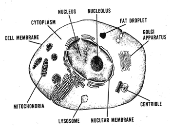
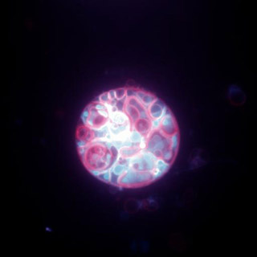
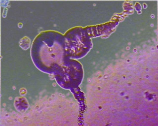
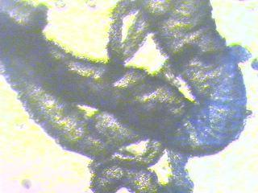

RESETTING THEORY
Systems Evolution & Bio Feminism:
Move Over Darwin
Rachel Armstrong
Biology is the study of the laws of the natural world. Nature may be regarded as the endogenous system underpinning the genesis of living organisms and their environment. In human terms, the organization of the natural world is reflected in the issues arising from the science of reproduction, heritability and the creation of life. Since these processes biologically occur within the intimate spaces of the female body, feminism has sought to represent the interests of women in the control and regulation of human reproduction in modern Western culture. To date the dominant political and social paradigms of Western society are patriarchal and invoke a dualistic worldview based on the dichotomy of male and female with an associated division of these roles in the creation of life.
This dualistic ordering of reality is also hierarchical: the principle of male over female, mind over body, culture over nature, and so on. Male, mind and culture are exercising hierarchical control over female, body, nature. [1]
The consequences of patriarchy in terms of the practice of science for mainstream biology, including the study developmental science, is that it
... is founded on nineteenth and early twentieth century principles; namely Newtonian physics, logical analysis, reductionism, capitalism, and machines. By definition, science pursues ultimate truths about the world using a systematic process of reductionism and builds technologies in its own image... [2]
Notably, these Newtonian principles of cause and consequence where all phenomena, including humans, become calculable are reflected in the interpretation of biological discoveries today that liken the organism and its genesis to the creation of a Cartesian machine. According to this mechanistic view, it should be possible to build an organism from its constituents with sufficient knowledge of the design principles that created it.
Despite all its successes, modern biological science has done remarkably little to tackle the fundamental question at the heart of biology; what is the nature of the living organism? Contemporary biologists... seldom ask this question openly and explicitly. The reason is simple: they already presuppose the answer. The organism is a machine. [3]
The Cartesian model of cell organization can be seen under a microscope and is composed of a cytosol [gel-like] matrix, a lipid [fatty] membrane and a dense nucleus that is made of granular material called chromatin.
Figure 1: Gross Anatomy of the Cell

The structure of a cell.
The mechanisms underlying these components were characterised during the second part of the twentieth century owing to advances in biochemistry and molecular biology. The cytosol appeared to be the site of cell synthesis, and the cell membrane performed a vital role in transport mechanism, whilst the cell nucleus received the most intense scrutiny, as it became equated with the site of cellular identity and synonymous with the locus of control of the organism.
Fuelling the growing interest in the nucleus was the discovery of the biochemical nature of nuclear chromatin which was shown to contain chromosomes that were divided into 'genes' that were made from a giant molecule called DNA [Deoxyribose Nucleic Acid]. The 'double helical' structure of DNA became the focus for contemporary genetics as it was proven to be capable of encoding the 'secret' instructions of living processes and could be transmitted to the cell's offspring following cell division. [4]
The most commonly accepted philosophy of heredity in modern science is based on Charles Darwin's 1859 writings on the notion of 'Natural Selection' which described the state of nature as a ruthless world engaged in a 'Struggle for Existence' whose organisms were engaged in endless competition for available resources.
Nothing is easier to admit in words than the truth of the universal struggle for existence... We behold the face of nature bright with gladness, we often see the superabundance of food; we do not see, or we forget that the birds which are idly singing round us mostly live on insects and seeds, and thus are constantly destroying life; or we forget how these songsters, or their eggs, or their nestlings are destroyed by birds and beasts of prey ... [5]
Darwin's hypothesis was that variations in the phenotype, or the material embodiment of an organism, occurred between different members of a species that would compete for survival. The fittest organisms, as determined in the context of local environmental conditions, would survive and pass their advantage on to their offspring. Darwin also thought that the accumulation of favourable heritable changes within a particular group of individuals undergoing 'selective pressures' would gradually produce a new species.
Although Darwin's hypothesis was originally conceived as acting at the level of the organism's phenotype, the popularity of Neo-Darwinism in the latter part of the twentieth century combined with a molecular understanding of Mendelian genetics [6] made an enormous contribution to the study of genetics in that it gave Darwin's theory of evolution a molecular mechanism of action. Neo-Darwinists proposed that that variation of the organismal phenotype occurred spontaneously in a species through the random mutation of genes. These accidental genetic mutations then served as the site of action for 'natural selection' to occur at a cellular level against an environmental 'fitness' test through competition within a species. Random mutations that were not lethal to the organism were then passed on the next generation through the favourably selected genome.
Richard Dawkins elaborated further on the nature of the genetic mechanism proposing that individual organisms were actually enslaved by the genes contained in the nucleus and that the rest of the organism was nothing more than a survival machine which was designed to preserve the interests of 'selfish' genes, or replicators.
Replicators began not merely to exist, but to construct for themselves containers, vehicles for their continued existence. The replicators that survived were the ones that built survival machines for themselves to live in. [7]
Whilst Darwin's description of nature was characterised by the notion of organisms under siege in an endless struggled for survival, Dawkins 'Selfish Gene' painted an even more gloomy portrait of the natural world, in which the anarchical molecules that comprised living systems behaved in such a ruthless, insensitive way that they appeared to be at odds with the possibility of ever evolving organisms capable of living in a civilized manner.
... A human society based simply on the gene's law of universal ruthless selfishness would be a very nasty society in which to live ... but however much we deplore something, it does not stop it being true. [8]
Barbara McClintock, who had been working in a rather unglamorous field of biology looking at inheritance patterns in maize plants since the 1940s, had suggested an alternative modus operandi of genetic systems which, at the time, was ignored by mainstream biology. McClintock's work had identified 'mobile jumping elements', later called transposons, which operated within the genome of these plants. McClintock's observations suggested that genomes were capable of interaction, not just competition, and that they functioned in an unpredictable, non-reductionist manner. In her book A Feeling for the Organism the Harvard trained biologist Evelyn Fox Keller noted that McClintock went beyond the question of developmental control and regulation to discuss the more general occurrence of innate mechanisms for restructuring the genome, mechanisms that are called into action by internal and external stress. [9]
Despite ongoing controversies within the scientific community about the validity of the role of the gene in evolution, a debate that became characterized by the ongoing public exchanges between Richard Dawkins, who favoured a genes only approach and Stephen Jay Gould, who argued for a multifactorial mechanism that occurred at the level of the organism, [10] the gene centric view was more popularly widespread amongst the scientific community partly because of the elegant simplicity of Neo-Darwinist theory and partly because an analogy was drawn between the genetic code and the principles of computing. Concepts in molecular biology were commonly explained as having analogous information processing systems to digital computers, an approach that was endorsed by Dawkins. This served to give further weight to the reductionist perspective of genetic systems, as well as giving the impression that genes were obedient to instruction and could be reliably controlled, which was contrary to McClintock's findings.
Computer viruses are an analogy -- it's a very good analogy, because a computer virus is a piece of computer code written in computer language. [11]
The organism as an organic computing system was also a useful model for the biotechnological industries as a way of looking at their results and testing theories about genetic expression and control. Despite growing acceptance that the analogies were not perfect, knowledge about genetics based on this way of looking at cellular information processing, began to expand at an unprecedented rate.
In 1985 the invention of the Polymerase Chain Reaction (PCR) technique by Kary B. Mullis, [12] became the catalytic technology needed to fuel the rapidly developing insights into genetics. PCR allowed scientists to make millions of copies of even the tiniest samples of DNA and greatly accelerated the rate at which previously painstaking genetic experiments could take place, resulting in the sequencing of the entire genome of simple organisms such as Caenorhabditis Elegans, a simple round worm, in 1998 by the Sanger Institute. [13] As more organisms joined the ranks of genetically decoded creatures it was evident that the sequencing of the three billion base pairs of human genetic code was within sight. Research groups collectively worked towards decoding the entire human genome. This monumental venture was called the Human Genome Project, and generated intense competition between research groups to find increasingly faster and more efficient ways of reaching their goal. New technologies seemed to be invented almost daily and it was already apparent in the early 1990s that the full DNA sequence of the human genome would soon be known." [14]
One of the key figures in the sequencing of the human genome was J. Craig Venter who decoded the human genome faster and cheaper than anyone else and secured his scientific reputation in 2000 when he nearly outran the U.S. government in the race to map it. At the time that Venter gave his press release at the White House announcing the completion of the decoding of the human genome, genetics was thought to be able to offer new insights into human disease processes, which would not only have an impact on medicine, but also on our general quality of life.
The genome sequence represents a new starting point for science and medicine, with potential impact on every disease. [15]
The human genome was finally published in 2003 [16] and after the initial excitement had quelled, researchers began to decipher the meaning of some of the surprises the human genome had in store for them. Notably there were only about 35,000 genes, which was later revised to 30,000, but was still far fewer than the 100,000 anticipated. It also appeared that proteins were more complex than previously imagined and that there were large amounts of non-coding or 'Junk' DNA throughout the entire human genome, whose origin and role within the cell continues to remain speculative.
The full significance of these and other findings from the sequencing of the human genome is still being considered but it has rapidly become accepted that the regulation and expression of genes is an almost unfathomably complex system. The relatively few genes needed to build a human, which is only one third more than the 17,000 that were required to build C. Elegans, gave scientists the first clues to the degree of sophistication of gene regulatory networks. It is becoming clear that, as more work is carried out on deciphering the human genome, certain impasses are emerging that can't be fully 'explained' by Darwinistic mechanisms. Feminist perspectives, however, such as those postulated by the Harvard scientist Evelyn Fox Keller, offer the potential to open new possibilities for interpreting the principles of life and are able to offer different perspectives on the nature of the organism.
Keller sought to rebel against the growing notion, prevelant around the time of the sequencing of the human genome, that genes allegedly controlled all aspects of development. Her contention was in regards to the central dogma of the gene, and argued that the popular notion of a discreet unit of biological 'code' did not exist in the way it was described. Keller proposed that complex networks made the decisions about what parts of the genetic code were actually expressed, not the 'genes', since DNA is unable to copy itself on its own without the cooperation of other molecules, which are under alternative, even more complex modes of instruction.
Which protein should a gene make, and under what circumstance? And how does it choose? In fact, it doesn't. Responsibility for this decision lies elsewhere, in the complex regulatory dynamics of the cell as a whole. It is from these regulatory dynamics, and not from the gene itself, that the signal (or signals) determining the specific pattern in which the final transcript is to be formed actually comes. [17]
Eva Jablonka and Marion J. Lamb characterise some of these alternative mechanisms that regulate cell function by outlining four distinct evolutionary mechanisms responsible for the development of organisms; genetic, epigenetic (developmental), behavioural, and symbolic (linguistic). They argue that developmental, behavioural, and linguistic attributes are able to impinge on evolution through a process of assimilation. Although critics argue that all four dimensions may ultimately be considered a consequence of genetic strategies [18], Jablonka and Lamb use well-argued case studies to illustrate how their different mechanisms affect the final phenotype of an organism, and how this contrasts with Neo-Darwinian genetics.
Contrary to long-accepted majority opinion, not all genetic variation is entirely random or blind; some of it may be regulated and partially directed. [19]
The view of a disseminated, non hierarchical form of biology underpinning cell processes has been endorsed by the geneticist and bacteriologist James Shapiro, a leading figure in mainstream science. Yet he is firm in his belief that, however evolution might work, the evidence does not support Darwinism. [20]
We have progressed from the Constant Genome, subject only to random, localized changes at a more or less constant mutation rate, to the Fluid Genome, subject to episodic, massive and non-random reorganizations capable of producing new functional architectures. Inevitably, such a profound advance in awareness of genetic capabilities will dramatically alter our understanding of the evolutionary process. [21]
Despite the evidence for complex regulatory systems that operate on the genome and may even circumvent it, the sequencing of the human genome provided a mechanism by which genetic supremacy over cell identity could be tested, by creating genetic information from scratch. Said Venter,
I've really come to view the world from a gene-centric point of view, in part, because we're now going into the design phase. I'm looking at genes as the design components of the future, not just interesting elements of biology. [22]
In 1999 Venter and his team used a systems biological approach [23], called systems genomics, to discover what were the smallest number of genes needed for an organism to self-sustain and reproduce itself, by conducting an 'audacious biohack' [24] on the tiny bacterium Mycoplasma Genitalium. Their approach was to strip a functional organism down to its basic components until it no longer worked. Even at the start of the experiment this organism only had 482 protein coding genes, yet Venter's group showed that it could function 'quite happily' when it was only using around 300 of these, the rest having being 'knocked out' of the genome by a process of mutagenesis. [25] In principle, the evaluation of a minimal genetic system would provide Venter's team with key insights into how the much larger and vastly more complex human genome operated.
Right now we're all focused on the genetic code because it's something we can define and the environment is so many orders of magnitude more complex to define, but we're having this trouble with a single cell with a few hundred genes; we as humans have a hundred trillion cells with 23 thousand or so genes, and an infinite number of combinations, so defining our environment is going to be a lot more complicated than that for a single cell. We decided the only way to answer these questions was to make a synthetic chromosome to understand minimal cellular life. [26]
Perhaps Venter's most impressive technical achievement in systems genomics came at the start of 2008 when he announced the creation of a synthetic genome using a modified organism (the largest man-made DNA structure) by synthesizing and assembling the 582,970 base pair genome of a bacterium, Mycoplasma genitalium JCVI-1.0, dubbed Mycoplasma laboratorium. [27] The artificial sequence awaits activation by inserting it into a hollowed out shell of a donor species to 'kick start' reproduction, a procedure which is also a significant technical challenge. Venter's group has recently announced that this is imminent, possibly as soon as the start of 2010 [28].
Now we know we can boot up a chromosome system. It doesn't matter if the DNA is chemically made in a cell or made in a test tube... We didn't know if it would work or not. Now we do. [29]
The organism has already sparked controversy since the Venter Institute filed for patents in the U.S. and internationally, which has been met with heated opposition from the Action Group on Erosion, Technology and Concentration [ETC] watchdog group.
The idea of owning a species breaches a societal boundary ... for the first time, God has competition. [30]
Venter's synthetic organism has huge implications not just for the practical aspects of biological design but also in terms of how organisms are defined and 'classified'.
Until a decade ago, scientists categorized microorganisms almost exclusively by their physical characteristics: how they looked, what they ate, and the by-products they produced. [31] Now Venter's work implies that perhaps a better method for classifying species may be through the genomic sequence rather than the phenotype, owing to the considerable amount of manipulation that can be achieved at the genetic level of an organism. Venter's group is in the process of compiling a database of bacterial genetic codes, anticipating the time when they can freely mix and match sequences to produce designer organisms.
We're coming up with new modified life forms, and we should be able to go from the digital world right to the analog world in the computer, and ... crank out synthetic chromosomes. [32]
These developments, termed 'combinatorial genetics,' and their implications are currently being hotly debated in the scientific community. If Venter's perspective is adopted it will have implications not just for bacteria, but for how all species are viewed, including humans.
Whilst Venter explores gene-centred models of cellular identity, other research groups have taken a different approach and are trying to find ways to build an entire organism from scratch, which may not even need genes to instruct them.
These new model systems raise questions about what exactly constitutes a living system, since it is possible that 'life' may not actually be a discreet property of matter, but a scalar concept. However, a working definition of what may or may not be alive is useful to researchers, so that they know when they have observed something interesting or not. Steen Rasmussen [33] and colleagues have proposed that a 'minimal cell' needs a compartment, program and metabolism, providing a model by which a synthetic cell can be made from scratch, and setting a new benchmark for the creation of artificial organisms.
Scientist Andrew Ellington from the University of Texas, at Austin, argues that since there is no adequate definition of 'life' [34] it is better to look at fundamental material systems that are capable of 'interesting' behaviour from a 'bottom up' perspective rather than use 'top down' approaches in the creation of synthetic organisms. Ellington argues that 'nanotechnology' is not just a challenging hardware problem to address but also an insurmountable software issue, a conundrum that was famously addressed by Tom Knight from MIT who observed that 'Biology is the nanotechnology that works.' [35]
Ellington's group are working on chemical systems that give the appearance of 'life'. Using oil in water emulsion the research group is trying to equip these systems with the ability to make simple decisions, in other words, they are striving to create chemical systems, without programming them with instructions embedded in a biological 'code,' such as DNA, that will be capable of computation. Ellington's research demonstrates that, although organic molecules may be necessary in attempting to design a bottom up model of an organism, genes may not actually be essential, since the 'decision making' potential of a living system is embedded in the entire organism. This viewpoint supports Stephen Jay Gould's notion of evolution as taking place at the level of the organism, rather than specifically acting at the level of the genes as Dawkins suggests, as the organism behaves as a kind of ubiquitous computer [36] whose outputs are those that are normally associated with living systems such as, growth, movement, and differentiation.
The notion of whether a code or program is essential for living systems to evolve is a fundamental question regarding the Origins of Life. Modern day biology is the product of around four billion years of evolution from which complex organic systems arose from simple carbon-containing precursors. Scientific groups interested in making life from scratch are discovering ways of modelling living processes by investigating how simple organic molecules are able to develop into complex systems.
Currently there are two main theories about how life was created from scratch, a process known as abiogenesis.
The most popular theory is an 'information first' self-copying strategy of molecules which is currently synonymous with the theory of RNA [Ribose Nucleic Acid] World, a single stranded molecule that is generally thought to be the evolutionary precursor to DNA. The phrase "The RNA World" was coined by Walter Gilbert in 1986 [37] to describe a possible mechanism for abiogenesis where proteins were not yet engaged in biochemical reactions. RNA has been shown that it is able to perform a dual function in terms of information storage task of genetic information [38] and the full range of catalytic roles necessary in a very primitive self-replicating system. [39] Although there are various ideas about how the first self copying molecules arose, whether they were first organised on iron rich rocks or clay particles, this assumes that at a critical point, an ancestor of a single stranded molecule we call RNA was able to generate copies of itself in a nutrient rich environment.
The other theory is the 'metabolism first' model, [40] [41] [42] [43] which is gaining in popularity owing to developments in modelling primitive cell-like structures, or protocells, using non-depleting chemical systems that are enclosed in a lipid membrane.
Martin Hanczyc and Shelley Fujikawa working in Jack Szostak's laboratory at Harvard Medical School [44] demonstrated that, not only was it possible to get fatty protocells to grow and divide using chemicophysical methods, but also to ingest fragments of a kind of clay known as montmorillonite, a substance which has been shown to help form RNA. Hanczyc's further work on the protocell system at the Venice based company Proto Life, and subsequent collaboration with Takashi Ikegami, an artificial life expert from the University of Tokyo, resulted in a protocell system capable of movement and tropism towards a pH gradient using a fatty droplet that contained a chemical reaction, or metabolism. [45]
The unique characteristics of the protocell that challenge conventional notions of living systems are listed below.
Table 1: The Unique Semi-Living Pardoxical Characteristics of the Protocell
| It has a limited number of phased compartments that are capable of complex behaviour. |
| It is not a 'natural' entity but it does have an organic, carbon based organization. |
| It does not have a locomotory system but is capable of movement. |
| It is not 'sensible' yet it is capable of tropism towards a high pH gradient. |
| It is reproductively sterile, although it can generate daughter cells that are unlike their parent since they do not exhibit movement. |
| Some species appear to be able to escape from an amniotic sac, like a new born, when introduced to an aqueous medium. |
| It is not an organism and yet becomes life like by virtue of anthropomorphic aspirations.
|
Although the protocells fall far short of meeting a conventional definition of aliveness, they are fascinating paradoxical entities in biological and phenomenological terms. Hanczyc and Ikegami's protocell teeters somewhere between an agent that is capable of movement and a chemical component of a ubiquitous computer. Even in taking this mechanistic view of the protocell, its paradox of complex simplicity defies traditional Cartesian notions of design, since the fundamental 'components' of this semi-living system are not reducible and only function as a whole, which is contrary to the scientific traditions of reductionism.
Figure 2: Protocell

Protocell, a new species of synthetic organism, or 'cyborg'. Photograph courtest of Proto Life. Copyright Martin Hanczyc.
Despite its apparent minimalism (after all the protocell is just a chemically modified oil droplet) its dynamics are astonishingly varied and complex. Perhaps the most remarkable observation is that in some protocell entities, a membrane appears shortly after it is introduced into an aqueous medium, which is then shed and moves to one pole of the cell. Intriguingly, as the membrane is gradually cast off from the body of the protocell, the oil droplet appears to struggle out of the membrane before swimming free again, giving the impression that a kind of 'birth' is taking place, in which the membrane appears to function like an amniotic sac that the protocell literally has to struggle free from.
Perhaps the paradox of the protocell can be explained through the limitations of computation using chemical systems, which is in its earliest stages, but offers a way of enhancing our understanding of cellular complexity, or indeed, what constitutes a living system. Ikegami regards the ever-changing process of creating and breaking concepts around the question 'what is life?' as being central to the understanding of living systems, whose unavoidable inconsistency is the essence of life itself. He warns that whilst pursing the study of living processes, researchers should not be bound by modelling living systems, or subordinate to the laws and conventions of traditional biology, since such limitations could ultimately prove counterproductive. [46]
Mark Bedau, COO of Proto Life, is confident that research groups are steering away from traditional notions of what constitutes 'life' in their investigations and that advances such as the protocell are evidence that creation of the first synthetic organisms within one of these labs is only a decade away. [47]
These radical redefinitions regarding the nature of life and what constitutes an organism were anticipated by Donna Haraway, a biology PhD from Harvard and currently professor and chair of the History of Consciousness Program at the University of California, Santa Cruz, in her 1991 Cyborg Manifesto. [48] Haraway envisaged the meltdown between animate and inanimate matter through advanced technologies. She argued that the lack of division between systems would result in social and political change away from patriarchal and deterministic structures and would ultimately require a radical revisioning of human identity.
Late twentieth-century machines have made thoroughly ambiguous the difference between natural and artificial, mind and body, self-developing and externally designed, and many other distinctions that used to apply to organisms and machines. [49]
When Haraway's notion of treacherous, hybrid biological systems is viewed in conjunction with the prophetic arguments of other biologists such as Lynn Marguilis, a vision for an alternative nature and evolutionary portrait of the organism emerges. Marguilis has championed the case for an alternative evolutionary mechanism to Darwinism and Neo-Darwinism called 'symbiogenesis' which argues for the cooperative assembly of simple organisms to create more complex ones. [50]
When the complete palette of potential evolutionary strategies is viewed in the context of contemporary evolutionary theory, it becomes evident that there are more cooperative survival strategies than competitive ones, and feminist thinkers, such as Jablonka and Lamb, have made more than allusion to these alternative mechanisms driving heritable biological changes. Besides the now well documented symbiotic relationship between energy producing organelles in eukaryotes (cells with a nucleus), where mitochondria (in animals) and chloroplasts (in plants) were once free living primitive organisms, an observation supported by the possession of distinct DNA in these structures, there are other cooperative strategies that lead to heritable change within the organism. For example, lateral gene transfer (the direct transfer of genetic material) frequently occurs in bacteria, even between unlike species, and has enabled the alarming spread of antibiotic resistance. Alternatively, supported by extensive fossil evidence, Donald Williamson proposes the direct exchange of segments of body parts between adult and larval forms in pre-Cambrian species [51] may actually have given rise to the Cambrian explosion, the geological time period when most of the modern species were thought to evolve.
The author of this paper has generated a model of Williamson's theory by applying the principles of the protocell system to generate spontaneous, self-assembling forms that have some but not all of the properties of living systems, and have been referred to by the Initiatiave for Science Society and Policy at the Southern University of Denmark as 'Living Technology'. [52]
Figure 3: Worm Casts

Synthetic form, possesses some but not all of the properties of living systems, are not alive and can be regarded as 'Living Technology'. This particular species (designed by the author -- unpublished) is able to construct magnetite tubes that resemble 'worm casts'.
Figure 4: Magnetite Tubes

Magnetite tubes generated by Living Technology, designed by author. [53]
Over the course of the latter part of the twentieth century, feminist perspectives on mechanisms of heredity have challenged the gene as the locus of control within the cell, and postulate a more fluid, dynamic and responsive mechanism through which cellular identity operates. With such plasticity within the biology of the cell, notions of fixed identity cannot be sustained. Rather the organism is responsive and connected to their physical and informational circumstances, and its embodiment within these circumstances is critically influential on its morphology. This has been proven, in vitro, in the protocell experiments demonstrated by Hanczyc and Ikegami.
We are at a very interesting time in technological evolution where 'cell biology is the new nanotechnology and cyberspace' [54], which offers a mechanism to counter biological determinism in scientific terms. A more widespread change in the cultural conditions of science and technology is facilitating these feminist approaches and is manifest through a new predisposition for interdisciplinary collaboration that effectively constitutes a renaissance.
At the beginning of the twenty first century, the last of the great scientific dissections has already taken place. [55] Scientists have come to realise the need for new tools and approaches to conduct their research with as they try to make sense of the 'fragments' of information that are left over from twentieth century reductionist knowledge systems, that are characterised by examining the fragments of a system in ever increasing detail. In order to make working models it is important for researchers to collaborate with experts in different disciplines to gain insights that exist outside of their knowledge base. Additionally, science has realised that it is necessary to conduct experiments that explore some of the untapped potential of biotechnology without being limited by predetermined outcomes. These fusions have produced some surprising results such as DNA computing [56] and in the context of new technology this has given rise to a new style of twenty-first century science that is synthetic, not reductionist by nature. Synthetic knowledge is advanced through the accretion of ideas from outside a field of specialism. This not only gives strength to feminist ideologies, but also offers science a new politics whereby synthetic strategies can now be pursued. Science can put the human organism back together with a politics based on commonality of purpose and perhaps biology too.
In this context, the collective wisdom and aspirations of these women biologists may be regarded as Bio Feminism which is more than just a 'paralogy' of science, [57] since, at its core, is a politics based on inclusive notions of identity [58] and a philosophy of nature and evolution that is more optimistic than the existing patriarchal alternatives.
Bio Feminism considers the possibility of organismal survival through any and all effective strategies, replacing notions of 'fitness' with those of 'effective design' and seeks cooperative rather than competitive strategies for the dissemination of organismal information to the optional offspring. Furthermore, Bio Feminism even frees organisms from their ancestral obligations and legacies through technological intervention.
A cyborg is a cybernetic organism, a hybrid of machine and organism, a creature of social reality as well as a creature of fiction ... The cyborg skips the step of original unity, of identification with nature in the Western sense. [59]
As we approach the creation of the first truly synthetic organism, Bio Feminism and its allies in the field of systems biology and chembiogenesis, will provoke essential debate on what constitutes living systems and engage in a thorough review of the nature of the organism to consider what impact this will have on our notions of humanity at the start of the third millennium.
Now, after three billion years, the Darwinian interlude is over... as Homo sapiens domesticates the new biotechnology, we are reviving the ancient pre-Darwinian practice of horizontal gene transfer, moving genes easily from microbes to plants and animals, blurring the boundaries between species. We are moving rapidly into the post-Darwinian era, when species other than our own will no longer exist, and the rules of Open Source sharing will be extended from the exchange of software to the exchange of genes. Then the evolution of life will once again be communal, as it was in the good old days before separate species and intellectual property were invented. [60]
Notes
-------------------
[1] Rosi Braidotti, Ewa Charkiewicz, Sabine Hausler and Saskia Wieringa, Women, the Environment and Sustainable Development: Towards a Theoretical Synthesis, Zed Books, London and New Jersey, 1994, 30.
[2] Rachel Armstrong, "Punk Science," Cybersociology Magazine, Issue 5, http://www.cybersociology.com/files/5_punksciencearmstrong.html (accessed on 4 October, 2009)
[3] Daniel Nicholson, "Is the organism really a machine?" Alife XI, Proceedings of the Eleventh International Conference on the Simulation and Synthesis of Living Systems Abstracts, 48. http://eprints.ecs.soton.ac.uk/16740/1/ALIFExi_front-matter.pdf (accessed on 4 October, 2009)
[4] Maurice Wilkins, Alex Stokes and Herbert Wilson, "Molecular Structure of Deoxypentose Nucleic Acids" Nature, 171, (1953), pp. 738-740
[5] Charles Darwin, The Origin of Species, editor Jeff Wallace, (Ware, Wordsworth Editions, 1999), 49-50.
[6] Mendelian Inheritance: Initially derived from the work of Gregor Mendel published in 1865 and 1866 which was "re-discovered" in 1900, that suggested discreet particles were transmitted from parents to offspring providing a mechanism of heredity that avoided the complication of homogeneity which is the outcome when non discreet systems are intermingled such as in Darwin's theory of mixing of blood. When they were integrated with the chromosome theory of inheritance by Thomas Hunt Morgan in 1915, they became the core of classical genetics.
[7] Richard Dawkins, The Selfish Gene, (Oxford, Oxford University Press, 1976), 19.
[8] Richard Dawkins, The Selfish Gene, (Oxford, Oxford University Press, 1976), 3.
[9] Evelyn Fox Keller, A Feeling for the Organism, (New York, W. H. Freeman and Company, 1983), .
[10] Stephen Jay Gould, "Evolution of Life on Earth," Scientific American, October 1994, The Evolution of Life on Earth Website, http://brembs.net/gould.html (accessed on 4 October, 2009)
[11] Author Unknown, Public Broadcasting Service Website, Interview with Richard Dawkins, http://www.pbs.org/faithandreason/transcript/dawk-frame.html (accessed on October, 2009)
[12] Smithsonian Institution Archives, 'The History of PCR (RU 9577)', Smithsonian Videohistory Collection, http://siarchives.si.edu/research/videohistory_catalog9577.html (accessed on 4 October, 2009)
[13] Jonathan Hodgkin, H. Robert Horvitz, Barbara R. Jasny, and Judith Kimble, "C. Elegans: Sequence to Biology," Science, 11 December 1998: 2011. http://www.sciencemag.org/content/vol282/issue5396/ (accessed 4 October)
[14] Eva Jablonka and Marion Lamb, Evolution in Four Dimensions, (Cambridge, MA, MIT Press, 2006), 1.
[15] J. Craig Venter, A life Decoded, My Genome, My Life, (Allen Lane, Penguin UK, London, 2007), 317-318.
[16] Human Genome Project Information, U.S. Department of Energy Human Genome Program, August 2009, http://www.ornl.gov/sci/techresources/Human_Genome/home.shtml (accessed 4 October 2009)
[17] Evelyn Fox Keller, The Century of the Gene, (Cambridge, MA, Harvard University Press, 2000), 63.
[18] Mike Benton, "Evolution in four dimensions: Genetic, epigenetic, behavioural, and symbolic variation in the history of life," Book Review, J. Clin. Invest, 115, 11, (2005), 2961-2961.
[19] Eva Jablonka and Marion Lamb, Evolution in Four Dimensions, (Cambridge, MA, MIT Press, 2006), 7.
[20] Martyn Amos, Genesis Machines: The New Science of Biocomputing, (Atlantic Books, London, 2007), 278.
[21] James Shapiro, "Is Darwin in the Details? A Debate," Boston Review, (1997) http://www.bostonreview.net/br22.1/shapiro.html (accessed 4 October 2009)
[22] J. Craig Venter, "Life: A Gene Centric View," A Conversation in Munich, (Craig Venter & Richard Dawkins: Moderator: John Brockman) http://www.edge.org/documents/dawkins_venter_index.html (accessed 4 October 2009)
[23] Systems biology: An interdisciplinary approach to establish the minimal requirements for a living, functional organism starting from existing components and involved the construction of new biological parts, devices and systems that do not exist in the natural world and also, the redesigning of existing biological systems to perform specific tasks or even make a new whole. See (author unkown) Extreme Genetic Engineering An Introduction to Synthetic Biology, ETC Group, Action group on erosion, technology and concentration, January 2007, 1 http://www.etcgroup.org/upload/publication/pdf_file/602 (accessed 4 October 2009)
[24] Martyn Amos, Genesis Machines: The New Science of Biocomputing, (Atlantic Books, London, 2007), 298.
[25] John I. Glass, Nina Alperovich, Nacyra Assad-Garcia, Shibu Yooseph, Mahir Maruf, Carole Lartigue, Cynthia Pfannkoch, Clyde A. Hutchison III, Hamilton O. Smith, and J. Craig Venter, "Systems Biology for Energy and Environment," Genomes to Life Contractor-Grantee Workshop III, February 6-9, 2005, Washington, D.C. Genomics: GTL Program Projects, J. Craig Venter Institute. "Estimation of the Minimal Mycoplasma Gene Set Using Global Transposon Mutagenesis and Comparative Genomics," Genomics.energy.gov U.S. Department of Energy Office of Science Genomics: GTL, http://genomicsgtl.energy.gov/pubs/2005abstracts/html/file42.shtml (accessed 4 October 2009)
[26] John Brockman, Edge, 234, January 24, 2008, http://www.edge.org/documents/archive/edge234.html#V (accessed 4 October 2009)
[27] Press Release, 'Venter Institute Scientists Create First Synthetic Bacterial Genome', Synthetic Bacterial Genome, J. Craig Venter Institute, January 2008, http://www.jcvi.org/cms/research/projects/synthetic-bacterial-genome/press-release/ (accessed 4 October 2009)
[28] Rob Waters, "Gene Pioneer Venter Takes Another Step Towards Synthetic Life," Bloomberg.com, http://www.bloomberg.com/apps/news?pid=20601124&sid=a_D_BKjW5bR4 (Accessed 4 October 2009)
[29]John Brockman, Edge, 234, January 24, 2008, http://www.edge.org/documents/archive/edge234.html#V (accessed 4 October 2009)
[30]Special to World Science (author not known), "First patent claimed on man-made life form, and challenged," World Science, June 7, 2007. http://www.world-science.net/othernews/070607_mycoplasma.htm (accessed 4 October 2009)
[31] Jim Sliwa, "Genomics throws species definition in question for microbes," American Society for Microbiology http://news.bio-medicine.org/biology-news-3/Genomics-throws-species-definition-in-question-for-microbes-2239-1/ (accessed 4 October 2009)
[32] J Craig Venter, "Life What a Concept!" An Edge Special Event at Eastover Farm, Transcript of conversation between Freeman Dyson, J. Craig Venter, George Church, Robert Shapiro, Dimitar Sasselov and Seth Lloyd, (EDGE Foundation, Inc., New York, 2008), 53.
[33] Steen Rasmussen, Mark A. Bedau, Liaohai Chen, David Deamer, David C. Krakauer, Norman H. Packard and Peter F. Stadler, Protocells: Bridging Nonliving and Living Matter, Cambridge, MA, MIT Press, 2008), 71.
[34] Andrew Ellington Keynote Speech, "Generating the Appearance of Life," Alife XI, The Eleventh International Conference on the Simulation and Synthesis of Living Systems, Winchester, 2008.
[35] Chappell Brown, "BioBricks to help reverse engineer life," EE times, 11 June 2004
http://www.eetimes.com/news/latest/showArticle.jhtml;
jsessionid=PGU5KI5GFT0XKQSNDLPSKH0CJUNN2JVN?
articleID=21700333&_requestid=597201 (accessed 4 October 2009)
[36] Ubiquitous Computing: Uses forms of material computation for direct, rather than mediated, user experience. The term as it exists today was coined by Mark Weiser in 1988 at the Computer Science Lab at Xerox PARC.
"For thirty years most interface design, and most computer design, has been headed down the path of the "dramatic" machine. Its highest ideal is to make a computer so exciting, so wonderful, so interesting, that we never want to be without it. A less-travelled path I call the "invisible"; its highest ideal is to make a computer so embedded, so fitting, so natural, that we use it without even thinking about it. (I have also called this notion "Ubiquitous Computing", and have placed its origins in post-modernism.)"
Julie A. Jacko and Andrew Sears, The Human-computer Interaction Handbook: Fundamentals, Evolving Technologies, and Emerging Applications, (Lawrence Erlbaum Associates, Mahwah, NJ, 2003), 14.
[37] Walter Gilbert, "The RNA World," Nature, 319 (1986): 618
[38] Thomas R. Cech, "Exploring the New RNA World," Nobelprize.org, Nobel Laureate in Chemistry, 1989 http://nobelprize.org/nobel_prizes/chemistry/articles/cech/index.html (Accessed 4 October 2009)
[39] Sidney Altman, "The RNA World," Nobelprize.org, Nobel Laureate in Chemistry, 1989 Altman http://nobelprize.org/nobel_prizes/chemistry/articles/altman/index.html (accessed 4 October 2009)
[40] Aleksandr Oparin, "Proiskhozhozhdenie zhizny," Moscow, 1924, Translated by Ann Synge in Bernal, The Origin of Life, Weidenfeld and Nicolson, London, 1967), 199-234.
[41] Manfred Eigen and Peter Schuster, "The hypercycle, A principle of natural self-organization, Part A: Emergence of the hypercycle," Naturwissenschaften, 64(1977)541-565.
[42] Günter Wächtershäusser, "Before enzymes and templates: theory of surface metabolism," Microbiol Rev, 52 (1988), 452-484.
[43] Steen Rasmussen, Mark A. Bedau, Liaohai Chen, David Deamer, David C. Krakauer, Norman H. Packard and Peter F. Stadler, Protocells: Bridging Nonliving and Living Matter, Cambridge, MA, MIT Press, 2008), 71.
[44] Carl Zimmer, "What came before DNA?" Discover, 25, 6, (2003), 1-5.
[45] Hanczyc M.M., Toyota T., Ikegami T., Packard N., Sugawara T. "Fatty Acid Chemistry at the Oil-Water Interface: Self-Propelled Oil Droplets," J Am Chem Soc. 129, 30, (2007), 9386-91
[46] Takashi Ikegami, Keynote Address "Artificial Life is Dead," Alife XI, The Eleventh International Conference on the Simulation and Synthesis of Living Systems, Winchester, 2008.
[47] Seth Borenstein, "Scientists expect to create life in next 10 years, First cell of synthetic life can only be seen under a microscope," Msnbc.com website, August 2007, http://www.msnbc.msn.com/id/20249628/ (accessed 4 October 2009)
[48] Donna Haraway, "A Cyborg Manifesto: Science, Technology, and Socialist-Feminism in the Late Twentieth Century," in Simians, Cyborgs and Women: The Reinvention of Nature (New York; Routledge, 1991), pp. 149-181.
[49] Ibid.
[50] Lynn Margulis and Dorion Sagan, "Marvellous microbes," Resurgence 206, (2001), 10-12
[51] Graham Lawton, "Why Darwin Was Wrong About The Tree Of Life," New Scientist, 21 January 2009, http://www.newscientist.com/article/mg20126921.600-why-darwin-was-wrong-about-the-tree-of-life.html (accessed 4 October 2009)
[52] ISSP (The Initiative for Science, Society and Policy), Home Page, Living Technology, http://link.sam.sdu.dk/ISSPworkshops/index.html (accessed 4 October 2009).
[53] Rachel Armstrong, "Synthetic Pre Cambrian Ecologies," (September 2009) http://www.youtube.com/watch?v=HI7G6m04ICQ (accessed 4 October 2009)
[54] Neil Spiller, "Complex Systems Architecture," Spiller's Bits, Architectural Design, Wiley Interscience, http://www3.interscience.wiley.com/journal/122246111/abstract (accessed 4 October 2009)
[55] Andy Clark, "Review: Genesis Machines: The New Science of Biocomputing," Artificial Life, Spring, 15, 2,(2009), 251-253
[56] Leonard Adleman, "Molecular Computation Of Solutions To Combinatorial Problems," Science, 266, 11, (1994). 1021-1024
[57] Paralogy: Coined by Jean François Lyotard, who was particularly concerned about the destructive forces of science as a dominant ideology, to describe a creative and productive resistance to totalizing metanarratives.
[58]. Rachel Armstrong, "Cyborg Film Making," Cybersociology Magazine, Issue 5
http://www.cybersociology.com/files/5_cyborgfilmmaking.html (accessed 4 October 2009)
[59] Donna Haraway, "A Cyborg Manifesto: Science, Technology, and Socialist-Feminism in the Late Twentieth Century," in Simians, Cyborgs and Women: The Reinvention of Nature (New York; Routledge, 1991), pp. 149-181. Cyborg: A cybernetic organism (i.e., an organism that has both artificial and natural systems). Manfred Clynes and Nathan Kline first used the term in 1960 in an article about the advantages of self-regulating human-machine systems in outer space. See Manfred E. Clynes and Nathan S. Kline, "Cyborgs and Space," Astronautics, September 1960, 29-33.
[60] Freeman Dyson, "Our Biotech Future," New York Review of Books, Volume 54, Number 12, July 19, 2007, http://www.nybooks.com/articles/20370 (accessed 4 October 2009)
----------------
Dr. Rachel Armstrong is a TEDGlobal Fellow, writer, multimedia producer, arts collaborator and general medical practitioner specializing in non-Darwinian techniques of evolution and the challenges of the extra-terrestrial environment. She regards the discipline of architecture as holding a unique place in the cultural imagination being simultaneously iconic and personal, and which offers an ideal forum to engage with and reimagine our experience of the world so that we can reinvent our role within it. She is a Teaching Fellow at the Bartlett and a member of Professor Neil Spiller's AVATAR Research Group, developing a new architectural methodology called Systems Architecture, which is the study of complexity within the discipline of the built environment that enables the convergence of the nano-bio-info-cogno technologies and extends from the macro-scale flow of information to the micro-scale organization of building materials. She has published extensively on post-human evolution and alien phenomena, working at the intersection of art, science and technology.
© CTheory. All Rights Reserved